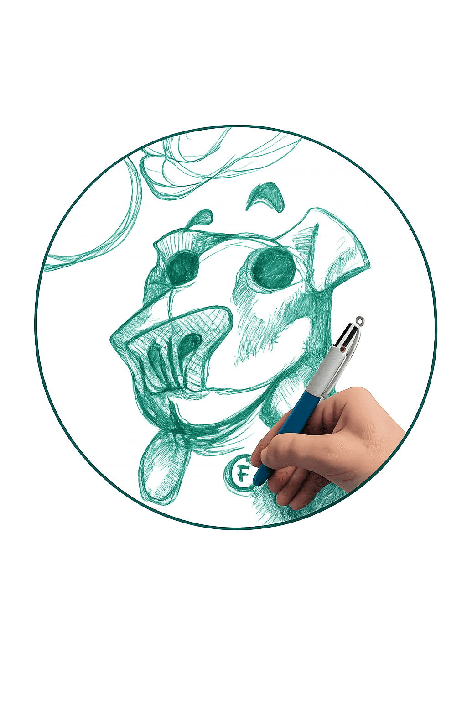

vitrine 02 / nature
Animaux, instincts & créatures vivantes.
Cette vitrine rassemble les recherches animales, les silhouettes instinctives, les créatures hybrides et les dessins liés au vivant.
Certaines œuvres naissent d’observations réelles, d’autres de transformations plus étranges, entre anatomie, émotion et imagination organique.

vivant
instinct
esprit de la vitrine
Entre carnet animalier et transformation.
Cette partie du carnet mélange : étude, instinct, caricature, déformation, créature et expérimentation organique.
matière vivante
Animal · instinct · créature
- Études animales
- Créatures hybrides
- Recherches instinctives
- Textures organiques
- Silhouettes vivantes
- Futures collections animalières
recherches / carnet vivant
Fragments d’expérimentation animale.
Cette vitrine évoluera progressivement avec de nouvelles recherches, études et futures collections liées au monde animal, aux instincts et aux créatures imaginées.

Texture organique

Créature en évolution
chemin nature
Suivre ou acquérir une pièce liée au vivant.
Cette vitrine prépare des œuvres animales, des prints, des carnets de recherche et des créations sur demande autour des créatures, instincts et formes organiques.
futur des collections
Ce qui arrivera progressivement.
collection animale
Originaux vivants
Dessins originaux liés aux recherches animales, instincts et transformations organiques.
bientôt
éditions futures
Prints & séries
Futures éditions numérotées liées aux créatures, silhouettes et collections animales.
ouverture future
expérimentation
Carnets & recherches
Pages de recherches, croquis, fragments d’études et expérimentations vivantes.
carnet évolutif
commande spéciale
Demander une création animale.
Il sera possible de demander : portrait animalier, créature hybride, caricature animale, composition instinctive ou dessin expérimental.
vitrine évolutive
Cette section grandira progressivement.
Nouvelles créatures, nouvelles recherches, nouveaux chapitres, nouvelles collections. Le carnet évoluera avec le vivant.
direction
Vivant · Hybridation · Carnet organique
Cette vitrine sert à construire un monde animal personnel : moins documentaire, plus instinctif, plus étrange, plus Carickat.